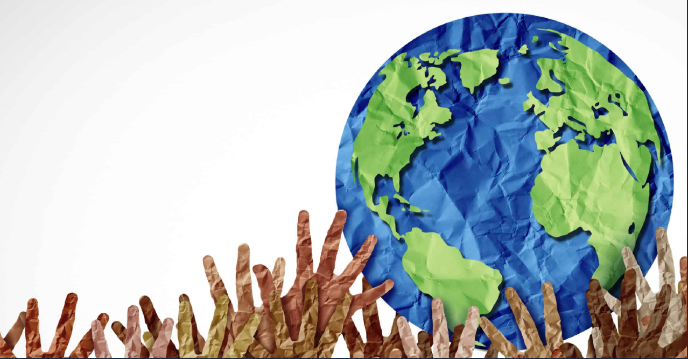

The Universal Declaration of Human Rights
Human rights are the basic freedoms and protections that belong to every person, regardless of nationality, gender, or belief. In 1948, the United Nations adopted the Universal Declaration of Human Rights (UDHR), which lists thirty rights every person is entitled to, such as the right to education, freedom of speech, and protection from discrimination.

How the UN Protects Human Rights
The United Nations works with agencies such as the Office of the High Commissioner for Human Rights (OHCHR) to monitor abuses, support victims, and pressure governments to uphold international law.
The UN also relies on member states, courts, and civil society organizations to hold violators accountable and to advocate for people whose rights have been denied.